O problema
Existem cerca de 300 requisições periciais atrasadas desde 2020 e somente um perito disponível para a realização do trabalho. Atualmente, o tempo médio de elaboração de um laudo pericial ambiental, exclusivamente por sensoriamento remoto, é cerca de 16 horas. A ideia é mapear o fluxo processual e aprimorá-lo para otimizar o tempo gasto na elaboração dos laudos.
as requisições são protocoladas no sistema Atena e atribuídas ao perito responsável pela perícia; o perito lê a requisição e, com base nos quesitos elaborados pela autoridade requisitante decide qual a metodologia a ser utilizada; Após, abre um modelo de laudo pericial no google docs, e começa a substituir as informações do modelo pelas informações da requisição. Faz consulta a sites externos e cola uma captura da página do site no laudo. Esta primeira etapa demora cerca de 2 horas. Na sequencia abre o Qgis e elabora uma sequencia de mapas que identificam e quantificam o dano ambiental, insere imagens dos mapas nos laudo, interpreta-os e faz considerações sobre eles; À partir da quantificação do dano calcula-se o valor do dano ambiental (R$), após se elabora a resposta aos quesitos específicos e, por fim, a conclusão do laudo pericial. Esta segunda etapa dura cerca de 14 horas.
Tempo: 16 horas e um total de 8 a 10 laudos por mês.
AS-IS · o processo antes do MVP
O caminho real, com quem faz, o que entra, onde espera e o que é automatizável. Fonte: tabela AS-IS do projeto.

Fluxograma AS-IS · amarelo: etapa manual; tracejado: ponto de espera. Os números correspondem à tabela. Fonte Mermaid.
| Etapa | Quem faz | Entra | Ação | Sai | Sistema | Regra | Onde espera | Tempo | Automatizável |
|---|---|---|---|---|---|---|---|---|---|
| 1 | protocolo Atena | Requisição | cadastro no sistema | numero de protocolo | sistema | não | adm | 0,2 | Sim, com apoio humano |
| 2 | Perito | requisição | Triagem | Requisicao | planilha | Realizável por Sensoriamento Remoto? Se sim, fazer laudo por SR; Se não, ir no local | Sistema Atena | 1 | Não |
| 3 | Perito | Requisição | Confecção de Mapas | Mapas | QGis | Caracterização e delimitação do Dano Ambiental | Sistema Atena | 12 | Sim, com apoio humano |
| 4 | Perito | Mapa | Confecção do Laudo | Laudo | GDocs | Explicar os mapas, unir informações e concluir o laudo | Sistema Atena | 4 | Pouco |
TO-BE · o processo com o MVP
O que muda em cada etapa, quem passa a fazer e o ganho esperado. Fonte: tabela TO-BE do projeto.

Fluxograma TO-BE · verde: máquina (automação local); azul: pessoa (fé pública). Fonte Mermaid.
Quando o laudo for elaborado via aplicativo compatível com o sistema Atena, à partir de um modelo pré-definido, não será necessário utilizar softwares complementares para elaboração e assinatura dos laudos. As informações que correlacionam o laudo ao protocolo, requisição e quesitos já virão preenchidas.
- Confecção de Mapas
Elaborado dentro do sistema, à partir de modelo pré-definido
A pessoa assistida pela máquinapadronização e redução do esforço - Confecção do laudo
Elaborado dentro do sistema, à partir de modelo pré-definido
A pessoa assistida pela máquinapadronização e redução do esforço - Assinatura do laudo
Assinado dentro do sistema, sem necessidade de aplicativo externo e de upload do laudo
A pessoa assistida pela máquinaredução do esforço
| Etapa | O que muda | Quem faz | Benefício | Esforço |
|---|---|---|---|---|
| Confecção de Mapas | Elaborado dentro do sistema, à partir de modelo pré-definido | A pessoa assistida pela máquina | padronização e redução do esforço | Médio |
| Confecção do laudo | Elaborado dentro do sistema, à partir de modelo pré-definido | A pessoa assistida pela máquina | padronização e redução do esforço | Médio |
| Assinatura do laudo | Assinado dentro do sistema, sem necessidade de aplicativo externo e de upload do laudo | A pessoa assistida pela máquina | redução do esforço | Baixo |
O que o MVP entrega
Tela-assinatura: Fila de laudos com prazo e miniatura do mapa.
Menu do MVP: PainelRequisiçõesNova requisiçãoConfiguração
Regras de negócio
| ID | Regra | Quando | Tipo | Exceção |
|---|---|---|---|---|
RN01 | O cabeçalho deve extrair e preencher automaticamente o número do processo, órgão e localização a partir da requisição. | Na seleção/importação da requisição pericial. | Validação | Permite edição manual se houver divergência nos dados. |
RN02 | Todo mapa temático gerado deve incluir obrigatoriamente a rosa dos ventos (norte), escala gráfica e a área delimitada do dano. | Durante a composição do mapa no modelo pré-definido. | Negócio | Nenhuma. |
RN03 | A exportação em PDF só é liberada se o cabeçalho estiver completo e pelo menos 1 mapa de evidência estiver anexado. | No momento de acionar o botão de exportar PDF. | Negócio | Nenhuma. |
Papéis
| Papel | Quem é | O que vê | O que faz | O que não faz | Registro |
|---|---|---|---|---|---|
| Cadastro de protocolo no Atena | administrativo | natureza da requisição | aceita a requisição no sistema, cria um protocolo e distribui o protocolo via Atena para o perito | arquivar o protocolo sem justificativa | muda o status do protocolo para atibuído e contabiliza o prazo de 10 dias |
| Triagem | perito | complexidade da requisição | decide se é possível confeccionar o laudo por SR | arquivar o protocolo sem justificativa; Extrapolar o prazo sem solicitar prorrogação | prazo expirado |
| Confecção de Mapas | perito | tipo e extensão do dano ambiental | caracteriza através de mapas os vstígios encontrados | deixar de comprovar os vestígios | nada |
| Confecção do laudo | perito | tipo e extensão do dano ambiental | traduz em palavras os achados evidenciados nos mapas | deixar o laudo incompleto | nada |
| Assinatura do laudo | perito | laudo em pdf | assina o laudo através de chave token | deixar de assinar o laudo | nada |
| Upload do laudo | perito | laudo assinado | preenche informações complementares no sistema Atena e faz o upload do laudo assinado | deixar de preencher informações complementares | status do protocolo muda para "finalizado" |
Métricas do piloto
Como testar
O MVP é um `index.html` offline, com dados fictícios. Abra index.html.
cd Apps/passivo-ambiental python construir.py python testes/testar.py python testes/cenarios.py python testes/jornada.py # Lightpanda (via WSL, CDP em 9222 e HTTP em 8000) python testes/jornada.py --cdp http://127.0.0.1:9222 --base http://127.0.0.1:8000
Documentos: PROJETO.md · sprint.md · README.md